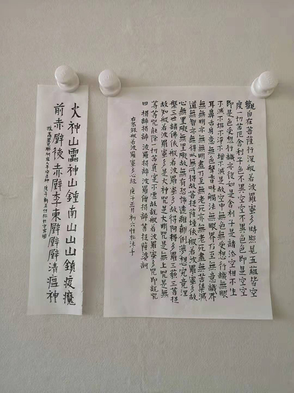
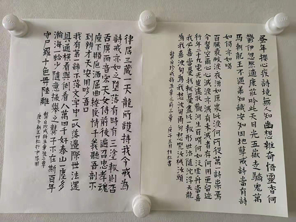

肺炎日记|2月4日：确诊破两万，停工停业何时休
原文链接 备份链接 【财新网】（记者 黄蕙昭 综合）新型冠状病毒疫情局势依然严峻：截至2月3日24时，全国确诊病例已破两万，疫情扩散蔓延仍在持续。新冠病毒阴影下，以餐饮业为代表的服务业大受冲击，大量中小企业面临短期现金流困境，疫情究竟何 …
澎湃新闻记者 范佳来
2020-02-05 11:47 来源：澎湃新闻
字号
“慌乱。”
这是武汉诗人张执浩经常提到的一个词。“看到外界的信息蜂拥而至，生命的无力感特别强烈。”
1月23日10时起,武汉城市公交、地铁、轮渡、长途客运暂停运营,机场、火车站离汉通道暂时关闭。张执浩选择足不出户。社交媒体和新闻里不断传来感染的消息，使他作为写作者倍感压迫。
在他看来，文学的意义在于对人性有深刻的见解，如果只是停留在表面的呐喊，就没有什么帮助，不如默默做一些力所能及的事情。
“人所经历的一切，都会化作文学的经验。人性中所自带的生命之韧性与默默的善意，这是人类绽放的对生命的反思。诗歌应该拥有强烈的悲悯意识，不能为时代所裹挟，有尖锐和独特的窥见，这也是文学的意义所在。”

张执浩 本文图片由受访者提供
封城期间，张执浩试着写诗，他笔下的《封城记》记录了作为个体的感悟：院子里的叶师傅被确诊/回想了半天才想起他儿子曾是我学生/那年夏天因抑郁症投江而死/傍晚我戴口罩去丢垃圾，抬头/看见月明星稀，好像不可能的事
面对网上的部分舆论，张执浩感到痛心。“我理解人们的恐慌感，但是在灾难面前，更需要的是众志成城的决心，需要将心比心、设身处地的思考。某些攻击武汉的舆论，是与现代文明精神背道而驰的。”
“事实上，在我看来，在疫情中‘武汉’只是一个标签，我们面临的真正困境应该是，能否从中培育出一种生命的韧性，达观，从容的处世能力，这才是我们共同需要的‘自救’能力。”张执浩说。
“揪心”
封城前，诗人沉河回到了位于湖北省潜江市的老家，“从没考虑过，居然会有回不去的一天”。
看着不断增长的确诊病例，他时时刻刻感到揪心，身边亲朋好友确诊的消息接踵而至：缺少床位、家人感染、无法确诊……沉河走在路上，会突然流下眼泪，他实在无法控制自己的感情了。

沉河老家向武汉捐赠的蔬菜
现在，他连买菜都不需要出门。他老家所在的村委会，将所有居民拉到微信群中，将每天需要的蔬菜统一登记，再统一购买，分发给大家。超市里许多物资接近断货——吃不到最新鲜的瓜果蔬菜，已经是这场疫情中，人们所遇到最微不足道的麻烦了。
“这种痛苦，只能亲身经历才能体会。很多人看不到，没办法将这种切身的痛苦传递给其他人。”沉河说。“这是一场比战争更艰难的战争。把所有的问题、抱怨和不解都放在一边，先让病人得到救治和隔离，这才是我们所有人应该去做的事情。”
“只有在重大疫情面前，我们才能感受到生命的渺小，个人的悲欢、人们追求的金钱、名誉是如此的微不足道。”沉河说。封闭在家不能外出后，他只能依靠抄写《心经》和《龚自珍全集》平息内心的不安。“最大的心愿就是这场灾难早点过去，希望战斗在一线的医务工作者，能坚持下去。”

《心经》

沉河在家抄写的《龚自珍全集》
“理解”
整个春节，在广播电台工作的诗人余笑忠基本没有休息，作为媒体人，他需要全天候关注每日的新闻。“看着那些确诊人数和疑似病例不断增多，内心很难受。但是转念一想，和被感染人群的伤痛相比，和那些不幸去世的人相比，我这点焦头烂额又算什么？”
这几天，他收到许多外地朋友的关心和祝福，武汉这座城市也因一场疫情变得异于往常的平静。这几天春光明媚，大街上却没有人，张执浩形容为：“安静得能听见心跳的声音。”
这几天，在网上看新闻时，余笑忠也有自己的一些感受。“希望大家能够理解我们。”

余笑忠
因为媒体工作的需要，他不时去办公室值班，遇到同样一脸疲惫、戴着口罩的同事，简单地打声招呼，不多言语，就开始了工作——身为一个普通的武汉市民，似乎只能在这样的非常时期，为城市默默贡献自己的力量。
武汉封城第14天，街道上渐渐有了过路行人和车辆，人们出门添置生活所需的食物和药品，大部分时候，城中仍是一片寂静无声。
在诗人小引看来，武汉现在就是一个舞台。2月4日，在最新的日记里，他这样写道：
“2020年一开张就是鸿篇巨制，魔幻得很，也残酷得很。不知道是地球出了问题，还是人类出了问题。”
“或许多年以后我们想起这个漫长的春节时才会恍然大悟，这其实是宏大的宇宙规则为人类安排的一堂课，如果此时不认真理解，等这个节点过后，我们将再也无法回望今天。”
(本文来自澎湃新闻，更多原创资讯请下载“澎湃新闻”APP)
关键词 >> 武汉,新冠病毒

澎湃新闻APP下载

原文链接 备份链接 【财新网】（记者 黄蕙昭 综合）新型冠状病毒疫情局势依然严峻：截至2月3日24时，全国确诊病例已破两万，疫情扩散蔓延仍在持续。新冠病毒阴影下，以餐饮业为代表的服务业大受冲击，大量中小企业面临短期现金流困境，疫情究竟何 …
原文链接 备份链接 疫情发展 根据丁香医生实时数据，截至 2020 年 2 月 4 日 18 时，全国累计确诊病例 20520 例，疑似病例 23214 例。较昨日，新增确诊病例 3284 例，新增疑似病例 5027 例。其中， …
原文链接 备份链接 童言是生活在新加坡的三明治专栏作者。自1月23日确诊第一例“新型冠状病毒肺炎”病例以来，目前新加坡已确诊18个病例，在海外确诊数据中排名第三，仅次于日本、泰国。 这场“肺炎”疫情牵动着许多在海外中国人的心绪。华人群体 …
原文链接 备份链接 02.02.2020本文字数：1995，阅读时长大约3.5分钟 导读：随着送检加快，黄冈今天确诊病例还将继续大增，但医药物资短缺等客观形势下，防控形势十分严峻。 作者 | 第一财经 陈益刊 紧邻武汉的湖北省黄冈市，新 …
原文链接 备份链接 澎湃新闻记者 范佳来 2020-02-01 10:06 来源：澎湃新闻 字号 2月1日，阴雨连日，武汉迎来了久违的阳光，但疫情尚未因此得到缓解。多位接受采访的武汉诗人告诉澎湃新闻记者，他们感到深深的无力。现在的武汉，缺 …